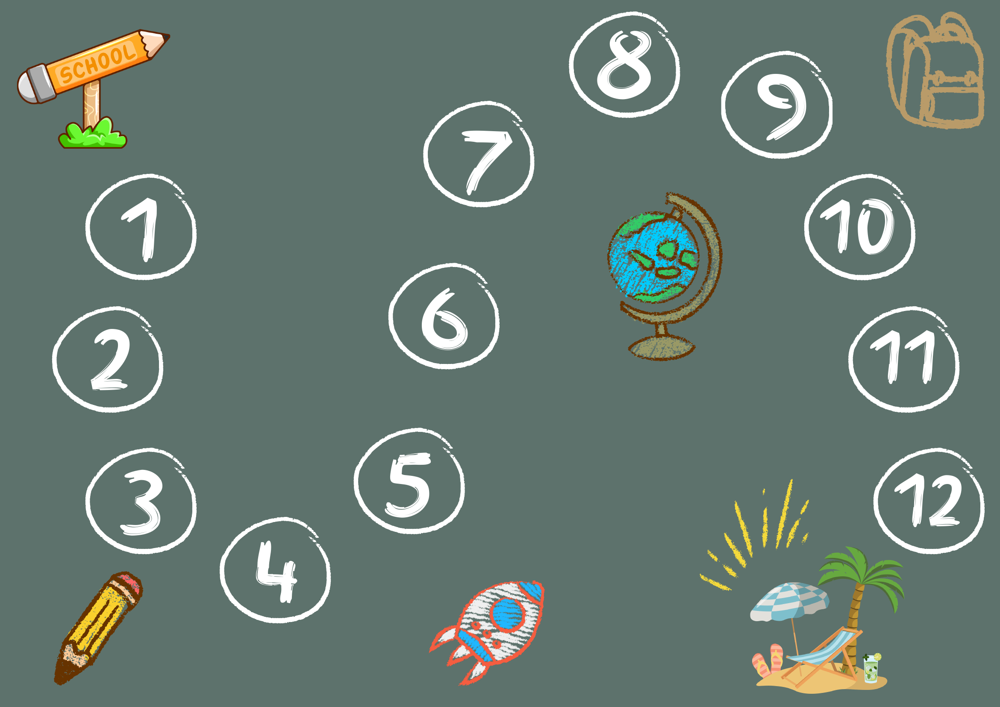

ערכו src/data/stepPositions.json — left/top הם אחוזים מגודל תמונת הלוח, ומסמנים את הפינה הימנית-תחתונה של דני. אחרי שינוי, הריצו את סקריפט יצירת התמונה.
src/data/stepPositions.json
left
top

python3 scripts/generate-debug-positions.py